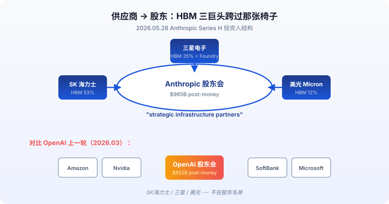
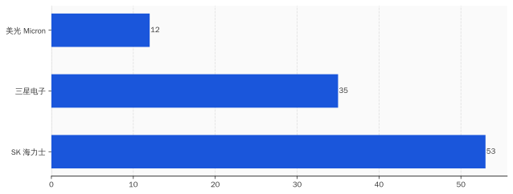
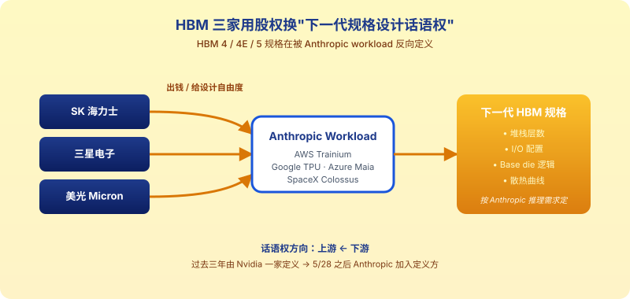
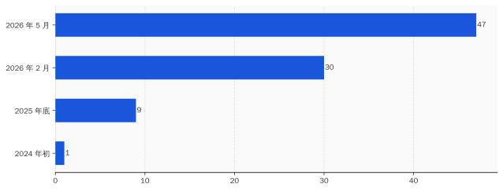

一、"Strategic Infrastructure Partners"这个措辞，是给谁看的
5 月 28 日那天，Anthropic 在自家 blog 上发了一篇标题极其朴素的公告——《Anthropic raises $65B in Series H funding at $965B post-money valuation》。
公告整体语气克制。除了估值这个数字本身，叙事节奏几乎没有变化。但读到第二段，措辞有一处不太一样的地方。
公告里把投资人分成了三组写：
第一组是领投基金——Altimeter、Dragoneer、Greenoaks、Sequoia。这一组拿到的描述是「co-led」。
第二组是其他金融投资人——Capital Group、Coatue、D1 Capital、GIC、ICONIQ、XN、Baillie Gifford、Blackstone、Brookfield、D.E. Shaw、DST Global、Fidelity。这一组拿到的描述是「joined the round」。
第三组就一行字。原文如下：
"Micron, Samsung, and SK hynix joined as strategic infrastructure partners, whose technologies play a key role in the global supply of memory, storage, and logic chips."
这一组只有三个名字。措辞从「投资人」升级成「strategic infrastructure partners」——战略基础设施伙伴。
差别在哪？「投资人」的意思是：你出钱，我给你股，回报算 IRR。「strategic infrastructure partner」的意思是：你出钱只是起点，后面我们还有别的事要一起做，这个事跟你的主业有关。
Anthropic 在同一段后面给了一句兜底解释——「这些关系会帮我们 reliably scale compute capacity at the pace our customers need」（按客户需要的节奏可靠地扩展算力容量）。
翻译一下：我们的算力扩张和你们的产能扩张要绑在一起。
这个措辞值得拆开看。因为在过去三年的 AI 公司公告里，「strategic infrastructure partner」这个词的位置基本上是给云厂商和数据中心运营商留的——AWS、Microsoft Azure、Google Cloud、Oracle、CoreWeave 这种公司。从来没有 HBM/DRAM 厂商拿过这个位置。
5 月 28 日是第一次。
而且不是某一家拿，是 Micron、Samsung、SK 海力士三家同时拿。这三家加起来供应了全世界几乎全部的 HBM——2025 年三季度 SK 海力士 53% 市场份额，三星 35%，美光 12% 左右。Anthropic 一次把这三家全请到了同一个公告的同一段。
中文报道这一周大多在写 OpenAI vs Anthropic 的估值对比——$852B vs $965B、谁是老大谁是老二、谁会更早 IPO。这是一个挺好讲的故事。
但有个细节没人提：OpenAI 那 $852B 的估值后面，没有 Samsung、没有 SK 海力士、没有 Micron。OpenAI 3 月 31 日关的那一轮 $122B，主要投资人是 Amazon、Nvidia、SoftBank、Microsoft——四家分别代表云、GPU、资本、办公生态。没有内存厂商。
两个月差。这两个月里发生了什么？
5 月 28 日那天，HBM 三巨头集体决定：之前那种「我卖货你买货」的关系不够用了，得换一种关系。
新关系叫「strategic infrastructure partner」。

二、HBM 已经卖光了，三家厂商为什么还要入股
正常逻辑下，供应商主动给客户掏钱这种事不应该发生。
正常逻辑是这样的：客户给供应商钱（订单），供应商给客户货（芯片）。供应商如果手头紧，可能会接受客户预付款；客户如果出货紧，可能会主动锁定供应商产能。但供应商主动出钱买客户股权，只在一种情况下发生——这个客户能给你的东西，比订单更重要。
对 HBM 三巨头来说，订单已经不缺。
SK 海力士 2025 年三季度财报会议上自己说的原话——HBM、DRAM、NAND 三条线 2026 年产能 essentially sold out（基本卖完）。三星这边韩国《电子时报》5 月那一篇报道——三星 2026 年要扩产能 50%，但 HBM4 的高端档已经被预订到 2027 年下半年。美光 2026 财年的 guidance 是 HBM 收入贡献从 12% 涨到 35%——还是供不应求。
Tom's Hardware 5 月有一篇报道，标题直白：《Samsung and SK Hynix warn AI-driven memory shortages could last until 2027 and beyond, as HBM demand explodes — customers already reserving supply years ahead》。客户提前几年预订产能——这才是 2026 年 HBM 厂商的日常处境。
这种处境下，HBM 厂商不需要任何"客户关系拓展"。他们需要的不是订单。
那他们需要什么？
需要的是下一代 HBM 的设计话语权。
HBM 这种内存的特殊性在于：它不像普通 DDR 内存那样有一个全行业统一的规格。HBM 的下一代——HBM4 和正在路线图上的 HBM5——每一代的细节规格（堆栈层数、I/O 配置、base die 上的逻辑电路、热设计点、定制接口）都需要跟 AI 芯片设计方一起锁定。
HBM4 base die 上能集成多少逻辑电路？HBM5 的 I/O 怎么配？这些规格不是 JEDEC 标准委员会拍板就完事的——主要由谁先和大客户达成 spec 协议来定。CES 2026 那场 HBM4 路线图发布会上，SK 海力士和三星都在抢 HBM4E 的客户 spec 锁定。
简单讲：HBM4 / HBM5 的规格是「客户定制」的。谁能在规格制定阶段被 AI 公司当成深度合作伙伴，谁就能在下一代竞争里占先。
之前这个位置是 Nvidia 和 Google 的——HBM 厂商和 Nvidia 共同定义了 HBM3、HBM3e 跑在 H100/H200/B200 上的规格。Google 那边跟 SK 海力士也有 HBM 定制项目，用于 TPU。
但 2026 年的变化是：跑 inference（推理）的大头不在 Nvidia 一家手里了。Anthropic 的算力分布在 AWS Trainium、Google TPU、SpaceX Colossus、Microsoft Maia 200——一句话，分散在四套不同的硬件栈上。
哪一套硬件栈用什么 HBM 规格——按谁的 workload 来调？
按 Anthropic 的 workload 来调。因为 Anthropic 是这四套栈上最大的推理负载方。Claude API 单 5 月就跑出 $47B run rate 的推理量。
这就解释了为什么 HBM 三家要进 Anthropic 的股东会——
进了股东会，就有了看 Anthropic 推理负载数据的资格。
看到推理负载数据，就能根据这个数据反向设计下一代 HBM 规格——做 base die 集成什么逻辑、做什么 I/O 配置、堆栈怎么排、散热怎么调。这套数据是 HBM4E / HBM5 规格定型的基础。
而且最有意思的一点——同一份 Anthropic 推理负载数据，Micron、Samsung、SK 海力士三家同时看。
这意味着 Anthropic 在下一代 HBM 规格的制定上，从「按供应商各自路线图被动接受」升级成了「三家供应商按 Anthropic 一家的 workload 趋同优化」。
供应商 → 股东，话语权倒过来了。HBM 厂商是出钱的那个，但他们买到的是未来五年下一代内存规格设计的入场券。
Samsung 那边还多一层心思。三星 Electronics 是 HBM 三巨头里唯一一家有 foundry（晶圆代工）业务的。SK 海力士和美光都没有 foundry。
这意味着 Samsung 进 Anthropic 股东会之后，下一步谈的不只是 HBM 设计，还可能是 Anthropic 的自研推理加速芯片代工——如果 Anthropic 像 OpenAI 那样在 2026 年下半年推出自家 Titan 类芯片，Samsung 2nm 工艺的 foundry 是排在 TSMC 之外最现实的选项。
Anthropic 公告里那行字——「play a key role in the global supply of memory, storage, and logic chips」——"logic chips"（逻辑芯片）这个词出现在公告里很值得注意。Samsung foundry 就是做 logic chips 的。这不是顺手写一笔，是给 Samsung 留了门。
把这一节合起来看：三家 HBM 巨头不愁卖货，进 Anthropic 股东会买的不是订单。他们买的是下一代 HBM 规格的设计话语权，附带 Samsung 抢 Anthropic foundry 订单的入场券。
对 Anthropic 来说，付出的是几个百分点的股权。换回来的是把上游内存供应链的话语权反向收编到自己手里。
这是过去三年 AI 公司没干成的事。

三、半年 $9B → $47B：HBM 厂商敢押注，是因为这条线确实跑得动
HBM 三巨头不是慈善家。他们押注 Anthropic，前提是 Anthropic 这条线真的能跑出量——跑出来的推理负载，才能真正成为他们做下一代规格的数据源。
那 Anthropic 这条线到底跑得有多快？
公开数字摆一摆：
- 2024 年初：Anthropic ARR 约 $1B
- 2025 年底：run-rate 约 $9B
- 2026 年 2 月：run-rate 约 $30B
- 2026 年 5 月：run-rate 约 $47B
那这 $47B 怎么涨上来的？拆产品看：
- Claude API：占大头，主要靠企业客户跑推理工作负载
- Claude Code：单一产品 $2.5B ARR，2026 年初这个数字还是 $1B 出头——半年又翻了一倍多
- Claude 消费者（chat、Pro 订阅）：占比相对小，不是增长主引擎
更有意思的是另一组数字——客户里单年消费超过 $1M 美元的有 1000+ 家。两个月之前这个数字是 500+。两个月翻一倍。
这种增长不是 viral 消费品那种"用户量涨一下子"。这种增长是企业 B 端订单一笔一笔签出来的——每一笔都是 procurement、legal、security review 全套流程之后才进系统。
也就是说：Anthropic 5 月份的 $47B run rate，是真有人在按月付的，不是融资轮估值倒推的"市梦率"。
这个营收结构有一个副作用——Anthropic 的公司性质在变。
S-1 申报前后，TechTimes 6 月 1 日那篇报道里有一组数据被翻出来：5 月底 Anthropic 公开招聘页面上，Sales 类岗位 72 个，AI Research 类岗位 67 个——销售岗第一次多于研究岗。
Anthropic 注册成立时的对外身份是「AI 安全研究实验室」。Founders Letter 里写过一堆关于"安全研究使命"的内容。但 2026 年 5 月底这一刻，Anthropic 招的人里销售比研究员多。
这种对比放在 IPO 申报背景下不是巧合。
Anthropic 在 6 月 1 日把 confidential S-1 递给 SEC 之前，必须先证明自己是一个能持续印钱的商业实体——不只是"前沿 AI 实验室"。公司性质叙事从"研究"切到"企业 SaaS"，是 IPO 估值能不能撑住的前提条件。
回到 HBM 三家为什么敢押注。
他们看的不是 Anthropic 的「模型有多好」——这个判断他们没能力做。他们看的是两组数：
第一组：run-rate $47B、增速半年 5 倍、企业占 80%、$1M+ 客户两月翻倍——商业实体属性已经稳了。
第二组：Claude API 的推理 workload 形状——AWS Trainium、Google TPU、Azure Maia、SpaceX Colossus 四套硬件栈上每天跑多少 tokens、用多少 HBM 带宽、热点分布在哪。这套数据才是他们做下一代 HBM 规格的真正素材。
第一组数据让他们敢付钱。第二组数据是他们付钱要换的东西。
这两组数据齐了——HBM 三巨头就掏支票了。这一笔是 2026 年最理性的几笔战略投资之一。Anthropic 给的对价是 strategic infrastructure partner 这个位置；他们给的对价是 H 轮里的真金白银 + 未来产能定向倾斜。
到这里 5 月 28 日那个 H 轮的故事就拼齐了。它不是"Anthropic 估值超 OpenAI"——估值只是结果。它是 Anthropic 在 IPO 申报前的最后两周，给上游内存供应链发了三张邀请函，三家全收了。

四、OpenAI 的 $35B 卡在 IPO/AGI 条款里，Anthropic 的 $65B 是真到账
对比 OpenAI 这边的处境，两边的差距才看得清楚。
OpenAI 3 月 31 日关了 $122B 融资，估值 $852B。这是有史以来最大的一笔私募轮。
但 $122B 里有一笔比较麻烦——Amazon 投的 $50B。
这 $50B 的结构 GeekWire 4 月底有一篇分析专门拆过。SEC 申报文件原文里写得很清楚：
"Amazon's $50 billion is structured as $15 billion of immediate capital and $35 billion of conditional commitments, triggered upon either (a) an OpenAI initial public offering, or (b) achievement of an [REDACTED] milestone, by December 31, 2028."
翻译：Amazon 给 OpenAI 的 $50B，先付 $15B；剩下 $35B 卡在两个触发条件——OpenAI 在 2028 年 12 月 31 日前完成 IPO，或者达到一个"被涂黑"的里程碑。
那个被涂黑的里程碑，The Verge 等多家媒体的猜测是 AGI——人工通用智能。
也就是说，Amazon 给 OpenAI 这 $35B 加了两个条件——按时上市，或者证明 AGI。
两个条件都很硬。按时上市意味着 OpenAI 必须在 2028 年底之前完成 IPO，不能拖。证明 AGI 这事更难——AGI 定义是什么、谁来定义、什么算"达到"——SEC 文件里这部分被涂黑，意味着 OpenAI 和 Amazon 两家律师当时没谈出统一文本，干脆涂掉。
这条款翻译得更直白一点：Amazon 不完全相信 OpenAI 能按节奏跑出来，所以 $50B 里大头先保留触发权。
这条款一出，OpenAI 的处境就变得有点紧——必须在 2028 年底之前把 IPO 跑完。但 IPO 时间窗口不是说定就定，市场情绪、监管节奏、宏观利率一个变量都能把它推迟。
所以 OpenAI 5 月份开始非常着急——CNBC 和 WSJ 5 月 19 日附近同时报道，OpenAI 把 confidential S-1 提交给了 SEC，目标 9 月 IPO，估值目标 $1 万亿。
这个时间表急到什么程度？从 5 月递 S-1 到 9 月公开上市，正常流程 SEC review 加 roadshow 需要 4-6 个月——OpenAI 这次走的是最快的那一档。
而 Anthropic 这边的处境是另一种节奏：
- 5 月 28 日：H 轮 $65B 全部到账（$50B 新增 + $15B 之前承诺兑现）
- 6 月 1 日：confidential S-1 递给 SEC
- 目标 10 月：NASDAQ 挂牌
两家时间窗口贴这么近不是巧合。Anthropic 这边的安排是有意的——不要太晚，但要紧贴 OpenAI 之后。
OpenAI 9 月上的话，会先把市场情绪用一次。如果 OpenAI 上得好，Anthropic 10 月接着上能享受余温；如果 OpenAI 上不动，Anthropic 自己可以推迟。两个窗口之间留了一个月的观察期。
而且 Anthropic 这次 H 轮的钱是真到账——$65B 不分阶段、不附条件、不卡 IPO 触发。Sequoia 和 Altimeter 是直接打钱进来的；Samsung、SK 海力士、美光是冲着下一代 HBM 设计权进来的。没有任何一笔卡在"未来某件事是否发生"上。
这跟 OpenAI 的 $35B 触发条款是质的差异。
Amazon 那 $35B 是"如果你按时 IPO，钱才到"——是一个对赌条款。Anthropic 这 $65B 是"钱已经到，我们现在谈下一步合作怎么深化"——是一个已结算的合作起点。
把这件事和上一节的 run rate 数字合起来看：Anthropic 不需要 IPO 救命，但必须抢在 OpenAI 之后立刻上——目的不是融资，是把 H 轮的估值锚定到公开市场，让 $965B 成为 benchmark。
而 OpenAI 9 月那次 IPO——是真有救命压力的。Amazon 那笔 $35B 必须在 2028 年底之前触发完成，不然就成了账面浮值。9 月不行，12 月还得再来一次。
供应链这一端，OpenAI 也没拿到 Samsung / SK 海力士 / Micron 的直接投资。OpenAI 那边走的是另一条路——自己设计 Titan 类芯片，向 Samsung foundry 下订单。但下订单只是"客户身份"，没有"strategic infrastructure partner"那种长期 spec 协议。
两家公司处境就这样彻底拉开了。
五、AI 供应链话语权这周开始倒灌
把这五件事缝成一行，5 月 28 日那一周的真正意义就出来了——
过去三年 AI 产业的供应链结构是一个 V 字形：- 顶端是 Nvidia，单点垄断 GPU。所有 AI 公司在它面前排队。
- 中段是 HBM 三巨头，被 Nvidia 锁定规格，按 Nvidia 节奏生产。
- 末端是 AI 公司——OpenAI、Anthropic、Google DeepMind、xAI——抢 Nvidia 的 GPU 产能配额。Nvidia 给谁多少卡，谁这一年能干多少事。
5 月 28 日开始，这个结构出现了第一个口子——
Anthropic 直接把 HBM 三家拉进股东会，绕过 Nvidia 这一层，开始和上游内存厂商共同定义下一代规格。注意这件事不是"Anthropic 不用 Nvidia GPU 了"——Anthropic 当然还在用 Nvidia 的 GPU，AWS Trainium、Google TPU、SpaceX Colossus 上跑的训练和推理任务一部分仍然依赖 Nvidia 体系。
但下一代 HBM 怎么设计这件事，从「Nvidia 一家说了算」开始变成「Anthropic 也有发言权」。
这是 AI 产业过去三年没发生过的事。
类比一下——这相当于汽车行业里，特斯拉直接进了 LG 化学、宁德时代、松下三家电池厂的股东会，开始和这三家共同定义下一代锂电池的化学体系、能量密度、热管理曲线。本来定义权在博世这种 Tier 1 供应商手里，现在被整车厂直接抓了上去。
汽车行业从博世主导到特斯拉主导，花了 10 年。
AI 产业的这个口子，从 Nvidia 主导到 Anthropic 在内存这一层抓住部分话语权，5 月 28 日一周之内完成。
而且这只是开始。可以预见的是：
- Google 一定会跟进——Google 自己有 TPU，跟 SK 海力士在 HBM 上有定制项目，下一步可能也会让 SK 海力士拿一定股权交换更深的 spec 协议。
- Meta 也得跟进——Llama 5 / Llama 6 训练推理负载在 2026 下半年还要再涨一档，靠和 Nvidia 单点合作已经不够。
- xAI / SpaceXAI 这边，马斯克的做事风格本来就喜欢把上游绑死，Colossus 2 / Colossus 3 后面应该会用更激进的供应链锁定方式。
那半年时间里，Anthropic 和 HBM 三家会一起把 HBM4E、HBM5 的设计规格往 Anthropic workload 的方向倾斜一格。这一格的差距，在 2027 年开始体现成"同样 die size，跑 Claude inference 比跑 GPT inference 快 10-20%"。
10-20% 看起来不多。但在万亿 token / 天的推理量级上，这是数十亿美元的电力账单差。
那时候大家才会回头看 5 月 28 日这一周。
5 月 28 日不是"Anthropic 估值超 OpenAI"。
5 月 28 日是 HBM 三家从供应商变股东、AI 公司从被动接 GPU 配额到反向定义内存规格——AI 产业供应链话语权第一次开始倒灌的那一周。